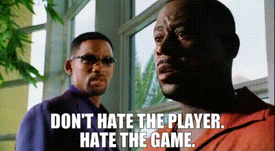
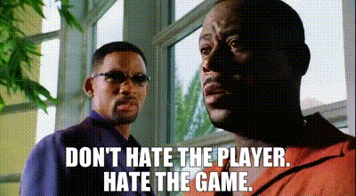

LinkedIn is a battleground. Maybe a quieter page will make me share my work with less anxiety.
Who doesn't appreciate a more honest view on one's work? Look at the uncropped and compressed profile pic:
 
